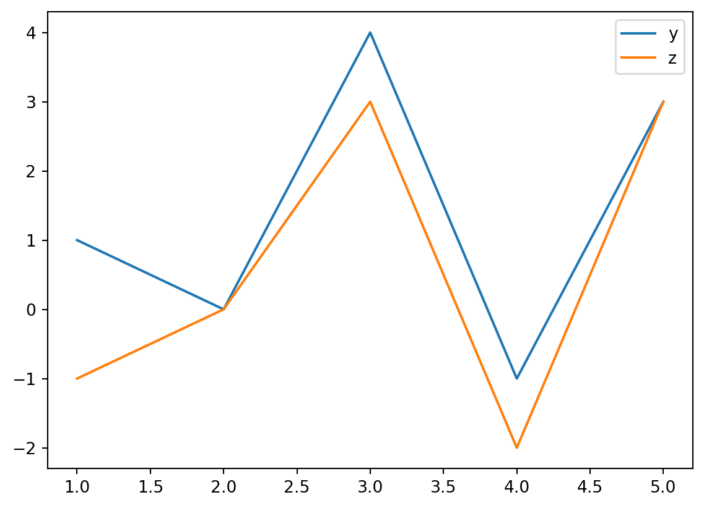
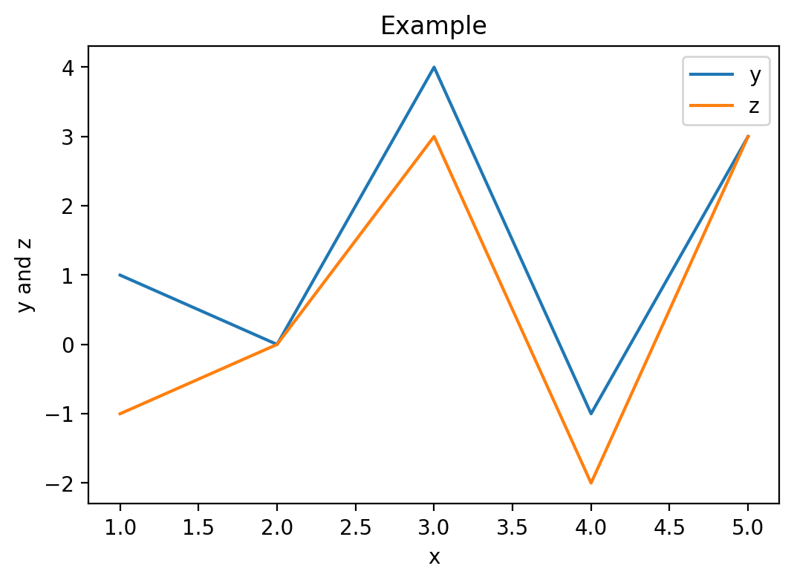
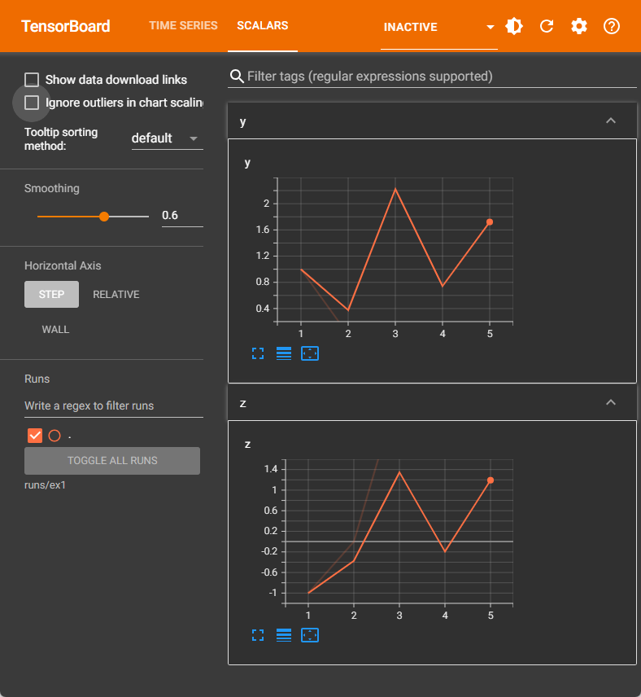
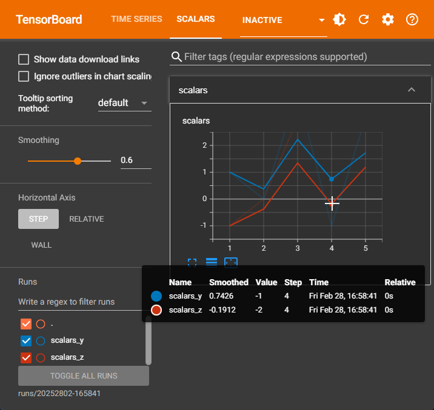

| Weight (g) | Wingspan (cm) | Webbed feet? | Back color | Species |
|---|---|---|---|---|
| 1000.100000 | 125.000000 | No | Brown | Buteo jamaicensis |
| 3000.700000 | 200.000000 | No | Gray | Sagittarius serpentarius |
| 3300.000000 | 220.300000 | No | Gray | Sagittarius serpentarius |
| 4100.000000 | 136.000000 | Yes | Black | Gavia immer |
| 3.000000 | 11.000000 | No | Green | Calothorax lucifer |
| 570.000000 | 75.000000 | No | Black | Campephilus principalis |
1 Introduction
In this Chapter we will discuss
- What is Machine Learning?
- What do typical Machine Learning problems look like?
- What is the basic structure of Machine Learning models?
- What is the basic work flow to use Machine Learning to solve problems?
- Some supplementary materials, such as Python.
1.1 What is Machine Learning?
Machine Learning is the science (and art) of programming computers so they can learn from data [1].
Here is a slightly more general definition:
[Machine Learning is the] field of study that gives computers the ability to learn without being explicitly programmed.
-- Arthur Samuel, 1959
This “without being explicitly programmed to do so” is the essential difference between Machine Learning and usual computing tasks. The usual way to make a computer do useful work is to have a human programmer write down rules — a computer program — to be followed to turn input data into appropriate answers. Machine Learning turns this around: the machine looks at the input data and the expected task outcome, and figures out what the rules should be. A Machine Learning system is trained rather than explicitly programmed. It’s presented with many examples relevant to a task, and it finds statistical structure in these examples that eventually allows the system to come up with rules for automating the task [2].
1.2 Types of Machine Learning Systems
There are many different types of Machine Learning systems that it is useful to classify them in braod categories, based on different criteria. These criteria are not exclusive, and you can combine them in any way you like.
The most popular criterion for Machine Learning classification is the amount and type of supervision they get during training. In this case there are four major types.
Supervised Learning The training set you feed to the algorithm includes the desired solutions. The machines learn from the data to alter the model to get the desired output. The main task for Supervised Learning is classification and regression.
Unsupervised Learning In Unsupervised Learning, the data provided doesn’t have class information or desired solutions. We just want to dig some information directly from those data themselves. Usually Unsupervised Learning is used for clustering and dimension reduction.
Reinforcement Learning In Reinforcement Learning, there is a reward system to measure how well the machine performs the task, and the machine is learning to find the strategy to maximize the rewards. Typical examples here include gaming AI and walking robots.
Semisupervised Learning This is actually a combination of Supervised Learning and Unsupervised Learning, that it is usually used to deal with data that are half labelled.
1.2.1 Tasks for Supervised Learning
As mentioned above, for Supervised Learning, there are two typical types of tasks:
Classification It is the task of predicting a discrete class labels. A typical classification problem is to see an handwritten digit image and recognize it.
Regression It is the task of predicting a continuous quantity. A typical regression problem is to predict the house price based on various features of the house.
There are a lot of other tasks that are not directly covered by these two, but these two are the most classical Supervised Learning tasks.
Note
In this course we will mainly focus on Supervised Classification problems.
1.2.2 Classification based on complexity
Along with the popularity boost of deep neural network, there comes another classificaiton: shallow learning vs. deep learning. Basically all but deep neural network belongs to shallow learning. Although deep learning can do a lot of fancy stuffs, shallow learning is still very good in many cases. When the performance of a shallow learning model is good enough comparing to that of a deep learning model, people tend to use the shallow learning since it is usually faster, easier to understand and easier to modify.
1.3 Basic setting for Machine learning problems
Note
We by default assume that we are dealing with a Supervised Classification problem.
1.3.1 Input and output data structure
Since we are dealing with Supervised Classification problems, the desired solutions are given. These desired solutions in Classification problems are also called labels. The properties that the data are used to describe are called features. Both features and labels are usually organized as row vectors.
Example 1.1 The example is extracted from [3]. There are some sample data shown in the following table. We would like to use these information to classify bird species.
The first four columns are features, and the last column is the label. The first two features are numeric and can take on decimal values. The third feature is binary that can only be \(1\) (Yes) or \(0\) (No). The fourth feature is an enumeration over the color palette. You may either treat it as categorical data or numeric data, depending on how you want to build the model and what you want to get out of the data. In this example we will use it as categorical data that we only choose it from a list of colors (\(1\) — Brown, \(2\) — Gray, \(3\) — Black, \(4\) — Green).
Then we are able to transform the above data into the following form:
| Features | Labels |
|---|---|
| \(\begin{bmatrix}1001.1 & 125.0 & 0 & 1 \end{bmatrix}\) | \(1\) |
| \(\begin{bmatrix}3000.7 & 200.0 & 0 & 2 \end{bmatrix}\) | \(2\) |
| \(\begin{bmatrix}3300.0 & 220.3 & 0 & 2 \end{bmatrix}\) | \(2\) |
| \(\begin{bmatrix}4100.0 & 136.0 & 1 & 3 \end{bmatrix}\) | \(3\) |
| \(\begin{bmatrix}3.0 & 11.0 & 0 & 4 \end{bmatrix}\) | \(4\) |
| \(\begin{bmatrix}570.0 & 75.0 & 0 & 3 \end{bmatrix}\) | \(5\) |
Then the Supervised Learning problem is stated as follows: Given the features and the labels, we would like to find a model that can classify future data.
1.3.2 Parameters and hyperparameters
A model parameter is internal to the model and its value is learned from the data.
A model hyperparameter is external to the model and its value is set by people.
For example, assume that we would like to use Logistic regression to fit the data. We set the learning rate is 0.1 and the maximal iteration is 100. After the computations are done, we get a the model
\[
y = \sigma(0.8+0.7x).
\] The two cofficients \(0.8\) and \(0.7\) are the parameters of the model. The model Logistic regression, the learning rate 0.1 and the maximal iteration 100 are all hyperparametrs. If we change to a different set of hyperparameters, we may get a different model, with a different set of parameters.
The details of Logistic regression will be discussed later.
1.3.3 Evaluate a Machine Learning model
Once the model is built, how do we know that it is good or not? The naive idea is to test the model on some brand new data and check whether it is able to get the desired results. The usual way to achieve it is to split the input dataset into three pieces: training set, validation set and test set.
The model is initially fit on the training set, with some arbitrary selections of hyperparameters. Then hyperparameters will be changed, and new model is fitted over the training set. Which set of hyperparameters is better? We then test their performance over the validation set. We could run through a lot of different combinations of hyperparameters, and find the best performance over the validation set. After we get the best hyperparameters, the model is selcted, and we fit it over the training set to get our model to use.
To compare our model with our models, either our own model using other algorithms, or models built by others, we need some new data. We can no longer use the training set and the validation set since all data in them are used, either for training or for hyperparameters tuning. We need to use the test set to evaluate the “real performance” of our data.
To summarize:
- Training set: used to fit the model;
- Validation set: used to tune the hyperparameters;
- Test set: used to check the overall performance of the model.
The validation set is not always required. If we use cross-validation technique for hyperparameters tuning, like sklearn.model_selection.GridSearchCV(), we don’t need a separated validation set. In this case, we will only need the training set and the test set, and run GridSearchCV over the training set. The cross-validation will be discussed in Section 2.2.5.
The sizes and strategies for dataset division depends on the problem and data available. It is often recommanded that more training data should be used. The typical distribution of training, validation and test is \((6:3:1)\), \((7:2:1)\) or \((8:1:1)\). Sometimes validation set is discarded and only training set and test set are used. In this case the distribution of training and test set is usually \((7:3)\), \((8:2)\) or \((9:1)\).
1.3.4 Workflow in developing a machine learning application
The workflow described below is from [3].
- Collect data.
- Prepare the input data.
- Analyze the input data.
- Train the algorithm.
- Test the algorithm.
- Use it.
In this course, we will mainly focus on Step 4 as well Step 5. These two steps are where the “core” algorithms lie, depending on the algorithm. We will start from the next Chapter to talk about various Machine Learning algorithms and examples.
1.4 Python quick guide
1.4.1 Python Notebook
We mainly use Jupyter Notebook (.ipynb) to write documents for this course. Currently most main stream Python IDEs support Jupyter Notebook. They are not entirely identical but the differences are not huge and you may choose any you like. In this course we recommand using VS Code. The setup can be found in Appendix Section A.1.
1.4.2 Python fundamentals
We will put some very basic Python commands here for you to warm up. More advanced Python knowledge will be covered during the rest of the semester. The main reference for this part is [3]. Another referenece is My notes.
1.4.2.1 Indentation
Python is using indentation to denote code blocks. It is not convienent to write in the first place, but it forces you to write clean, readable code.
By the way, the if and for block are actually straightforward.
if jj < 3:
jj = jj
print("It is smaller than 3.")
if jj < 3:
jj = jj
print("It is smaller than 3.")
for i in range(3):
i = i + 1
print(i)
for i in range(3):
i = i + 1
print(i)Please tell the differences between the above codes.
1.4.2.2 list and dict
Here are some very basic usage of lists of dictionaries in Python.
newlist = list()
newlist.append(1)
newlist.append('hello')
newlist[1, 'hello']newlisttwo = [1, 'hello']
newlisttwo[1, 'hello']newdict = dict()
newdict['one'] = 'good'
newdict[1] = 'yes'
newdict{'one': 'good', 1: 'yes'}newdicttwo = {'one': 'good', 1: 'yes'}
newdicttwo{'one': 'good', 1: 'yes'}1.4.2.3 Loop through lists
When creating for loops we may let Python directly loop through lists. Here is an example. The code is almost self-explained.
alist = ['one', 2, 'three', 4]
for item in alist:
print(item)one
2
three
41.4.2.4 Reading files
There are a lot of functions that can read files. The basic one is to read any files as a big string. After we get the string, we may parse it based on the structure of the data.
The above process sounds complicated. That’s why we have so many different functions reading files. Usually they focus on a certain types of files (e.g. spreadsheets, images, etc..), parse the data into a particular data structure for us to use later.
I will mention a few examples.
Note
csv files and excel files
Both of them are spreadsheets format. Usually we use pandas.read_csv and pandas.read_excel both of which are from the package pandas to read these two types of files. When reading excel, package openpyxl is needed.
Noteimages
Images can be treated as matrices, that each entry represents one pixel. If the image is black/white, it is represented by one matrix where each entry represents the gray value. If the image is colored, it is represented by three matrices where each entry represents one color. To use which three colors depends on the color map. rgb is a popular choice.
In this course when we need to read images, we usually use matplotlib.pyplot.imread from the package matplotlib or cv.imread from the package opencv.
1.4.2.5 Writing files
1.4.2.6 Relative paths
In this course, when reading and writing files, please keep all the files using relative paths. That is, only write the path starting from the working directory.
Example 1.2 Consider the following tasks:
- Your working directory is
C:/Users/Xinli/projects/. - Want to read a file
D:/Files/example.csv. - Want to generate a file whose name is
result.csvand put it in a subfoler namedfoldername.
To do the tasks, don’t directly run the code pd.read_csv('D:/Files/example.csv'). Instead you should first copy the file to your working directory C:/Users/Xinli/projects/, and then run the following code.
import pandas as pd
df = pd.read_csv('example.csv')
df.to_csv('foldername/result.csv')Please pay attention to how the paths are written.
1.5 Data visualization
We need to visualize the data during toying with models, especialy when we want to keep track of metrcis to evaluate the performance of our model. We will introduce two ways for the visualization.
1.5.1 Naive way
The idea is to record the data we want to visualize, and then direct display the data with a certain visualization library. The most popular and default choice is matplotlib. Although there are many customizations, the basic usage is very simple.
import matplotlib.pyplot as plt
x = [1, 2, 3, 4, 5]
y = [1, 0, 4, -1, 3]
z = [-1, 0, 3, -2, 3]
plt.plot(x, y, label='y')
plt.plot(x, z, label='z')
plt.legend()
Since in most cases in this course we would like to see line plot, this piece of code shows the main usage.
- We need to specify two series of data as
xandyrespectively. - We could show two lines in the same plot.
- If we add labels, and show legend, legends and labels in the plot will be automatically generated.
x = [1, 2, 3, 4, 5]
y = [1, 0, 4, -1, 3]
z = [-1, 0, 3, -2, 3]
fig, ax = plt.subplots()
ax.plot(x, y, label='y')
ax.plot(x, z, label='z')
ax.legend()
ax.set_xlabel('x')
ax.set_ylabel('y and z')
ax.set_title('Example')
fig.set_size_inches((6, 4))
fig.set_dpi(100)
fig.savefig('example.png')
1.5.2 Tensorboard
This section is optional.
Instead of manually recording data and show plots, we could use logging tools for visualization. Similar to libraries, there are many tools of choice. tensorboard is one of simpler tools. tensorboard originally is a tool for tensorflow. It later joins PyTorch and becomes a (relatively independent) tool. Here we will use it with PyTorch since in the second half of the semester we will talk about PyTorch. To install tensorboard after you install PyTorch you could use the following command. More details can be found here. Note that tensorboard depends on matplotlib therefore they have to be installed simutanously.
pip install matplotlib tensorboardThe basic idea of tensorboard is that it is logger that record the information you send to it. It can then retrieve the information and show some plots later. Whether the plots are good or not depends on how you structure the data sent to it. There are many customizations. Here we will only discuss one way to use it.
The mindset of using tensorboard is as follows. 1. A logger should be initialized to accept your data. 2. For organization, we put the logs in a foler structure. 3. During runs, we send data to the logger. 4. After the run, the logger is closed. 5. We could later run tensorboard to load these logs to see the data we generated during runs.
from torch.utils.tensorboard import SummaryWriter
writer = SummaryWriter('runs/ex1')
x = [1, 2, 3, 4, 5]
y = [1, 0, 4, -1, 3]
z = [-1, 0, 3, -2, 3]
for i in range(5):
writer.add_scalar('y', y[i], x[i])
writer.add_scalar('z', z[i], x[i])
writer.close()This piece of code shows the basic usage of tensorboard.
- We first initialize the logger and put it in the folder
runs/ex1. Note that if this folder is not assigned, a folder with random name will be generated. But if the name is assigned like what we do here, the logs will be recorded in this folder everytime we run the code. This is NOT recommended. - Then we use
.add_scalarto send the data we need to the logger one by one. Note that for these scalar data the three arguments arelabel,valueandindependent variable. - At the end, the logger will be closed and saved to disk.
To visualize the result, you may type the command in comma line, and tensorboard will then let you know where you can visualize the data.
tensorboard --logdir=runs/ex1 TensorBoard 2.18.0 at http://localhost:6006/ (Press CTRL+C to quit)Click the link, you will see tensorboard as follows.

How tensorboard show the data depends on how you structure your data. Here I suggest a way to organize the data you send to tensorboard.
- Use date/time and other indicators as the name of each run.
- Group similar metrics together and record them in a dictionary.
- When using a dictionary to send many scalars, use
add_scalarsinstead ofadd_scalar.
from torch.utils.tensorboard import SummaryWriter
from datetime import datetime
runfolder = datetime.now().strftime('%Y%d%m-%H%M%S')
writer = SummaryWriter(f'runs/{runfolder}')
x = [1, 2, 3, 4, 5]
y = [1, 0, 4, -1, 3]
z = [-1, 0, 3, -2, 3]
for i in range(5):
scalars = {
'y': y[i],
'z': z[i]
}
writer.add_scalars('scalars', scalars, x[i])
writer.close()
Note
Note that the plots from tensorboard and matplotlib are a little different. The reason is that tensorboard automatically smooth the curve. You can use the cmoothing factor to control the effect. When you change it to be 0, you will get exactly the same plot.
1.6 Datasets
You should have a dataset to build a machine learning model. The datasets usually come in different formats.
- You are provided with the dataset files.
- You load the dataset from public repository.
After you get the dataset, there should be some preprocessing steps to change the dataset into the format we need.
huggingface
from packages
1.7 Exercises
These exercises are from [4], [1] and [3].
1.7.1 Python Notebook
Exercise 1.1 (Hello World!) Please set up a Python Notebook environment and type print('Hello World!').
Exercise 1.2 Please set up a Python Notebook and start a new virtual environment and type print('Hello World!').
1.7.2 Basic Python
Exercise 1.3 (Play with lists) Please complete the following tasks.
- Write a
forloop to print values from 0 to 4. - Combine two lists
['apple', 'orange']and['banana']using+. - Sort the list
['apple', 'orange', 'banana']usingsorted().
Exercise 1.4 (Play with list, dict and pandas.) Please complete the following tasks.
- Create a new dictionary
peoplewith two keysnameandage. The values are all empty list. - Add
Tonyto thenamelist inpeople. - Add
Harryto thenamelist inpeople. - Add number 100 to the
agelist inpeople. - Add number 10 to the
agelist inpeople. - Find all the keys of
peopleand save them into a listnamelist. - Convert the dictionary
peopleto a Pandas DataFramedf.
Exercise 1.5 (The dataset iris)
from sklearn.datasets import load_iris
iris = load_iris()Please explore this dataset.
- Please get the features for
irisand save it intoXas an numpy array. - What is the meaning of these features?
- Please get the labels for
irisand save it intoyas an numpy array. - What is the meaning of labels?
Exercise 1.6 (Play with Pandas) Please download the Titanic data file from here. Then follow the instructions to perform the required tasks.
- Use
pandas.read_csvto read the dataset and save it as a dataframe objectdf. - Change the values of the
Sexcolumn thatmaleis0andfemaleis1. - Pick the columns
Pclass,Sex,Age,Siblings/Spouses Aboard,Parents/Children AboardandFareand transform them into a 2-dimensionalnumpy.ndarray, and save it asX. - Pick the column
Survivedand transform it into a 1-dimensionalnumpy.ndarrayand save it asy.